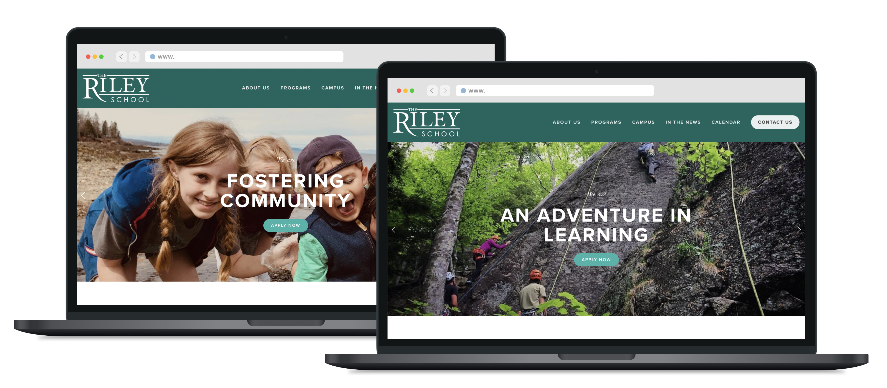
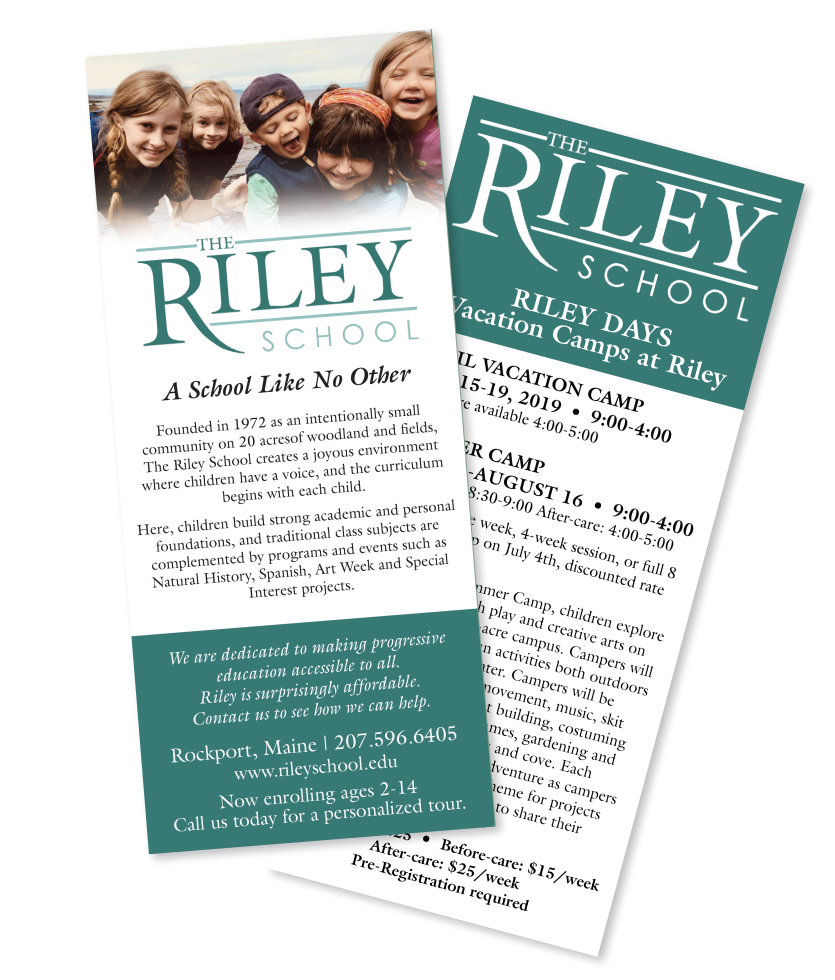

The Riley School is a small, independent private school on the coast of Rockport, Maine. As their Outreach and Marketing Coordinator — and in-house design department — I developed a new brand language and identity and created assets for future outreach. The objectives for this project were to bring in new enrollment, market the campus and school theater as event spaces, and facilitate communication with currently enrolled families.
My first decision was to create a design language and identity for the school. Because the number of staff and volunteers who would eventually be running the school's advertising, reuseable designs would allow for the variety and quantity of materials they release to remain consistent across print and web ads to in-school mailers. To do so, I met with key stakeholders to align on a single brand color and logo and removed old versions, colors, and fonts from the existing design materials.
The school's most visible marketing opportunity was their website, which had not been prioritized for the previous five years. The site was outdated both in style and content, and provided an immediate high-visibility opportunity for improvement. I rebuilt the site with the new branding using in Squarespace; We chose this platform because it would allow staff of varying technical ability to update and maintain the site without compromising the design or brand integrity.

In addition to the updated branding, I implemented an easy-to-find contact form with inquiry instructions, which the old site lacked. With a more versatile platform under us, I established a more cohesive color story and matched new free fonts to our existing logo. I brought over a great deal of original content from the old site to retain the spirit and history of the school, and I rewrote copy as needed to provide consistency in tone across our site and marketing campaigns. After launching the website, we chose new taglines that echoed our previous language but were tonally more appropriate for our messaging.
In the first full week after the revised site went live, the school received five enrollment inquiries through the website's contact form. This was more inquiries than the previous website had generated in four years, and the website contact form has continued to be one of the highest points of contact with the school, generating more than 70% of the total yearly inquiries.
We had an opportunity to improve the school's presense in our own community by partnering with local businesses. To that end, I developed a print advertising schedule with two local newspapers, added roadside signage about enrollment, and created a rinkside poster-style advertisement with our local hockey rink.

These materials were designed with reusability in mind, and we changed the language in our recurring ads as needed through the course of the year to keep the information relevant and seasonally appropriate. I communicated with news outlets across the state to identify new opportunities for our messaging, and secured information about TV and radio ads for the school to pursue as needed.
I implemented HubSpot as the school's CRM to assist in the goal of legacy enrollment, building an alumni network, and sending timely, professional newsletters to enrolled families and our donor list. We used HubSpot to build templates for several monthly mailers to larger Riley community, including families and board members, and to schedule social media posts for a number of special events and promotions. Through HubSpot we were able to build updated mailing lists that ensured we were sending newsletters, some of which contained photos of the children, only to those individuals to whom they were relevant. This was a safety concern we had identified and were able to solve quickly and permanently.